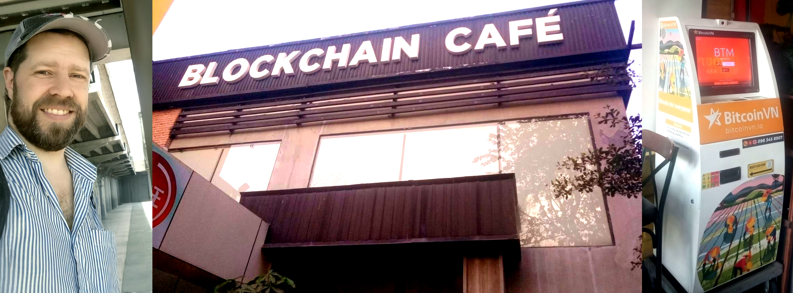

MetaProvide activity in Asia - Ho Chi Minh City (Saigon) in Vietnam
{kind=link}
Here's a fresh update from Ho Chi Minh City in Vietnam. An astonishing and beautiful mega-city in an incredible country. As profound and multifaceted as the history and culture of this part of the planet is, we will nevertheless have to limit our scope to Web3, AI, Data storage and Well-being services - all areas familiar to those who know the work of MetaProvide.
Vietnam is currently ranked first in the world in Web3 and crypto adoption, with up to 19% of its population between the ages of 18 and 64 using digital assets. The country’s crypto users are forecast to grow to 12.37 million by 2027, according to Kyros Ventures Crypto Market Report .
Vietnam is the home to over 200 blockchain projects and is expected to generate $109.4 million in revenue from crypto exchanges this year.
SOME OUTSTANDING ORGANISATIONS IN HCMC VIETNAM
There truly are some extraordinary Web3-oriented organisations in this part of Asia. Wonderful examples include AlphaTrue, Sky Mavis, VBI Academy, Hectagon Finance.
Here at Saigon/HCMC, there are several incredible organisations that we look forward to getting to know better. In particular, we are impressed by the work of Vietnam Blockchain Association, Ascend Vietnam Ventures and GFI Group.
COLLABORATION PLATFORMS FOR YOUR ORGANISATION
A unique custom-built Nextcloud-based solution; equipped with blockchain-based decentralised data storage. Keep your data on your server, or use Swarm's encrypted decentralised blockchain-based solution. You can only future-proof your business if you future-proof your data and infrastructure. Our specialist data sovereign platforms replace the need for intrusive big-data products like Microsoft Teams and Google Workspace, including tools like Google Drive/docs/calendar, Trello, Zoom etc. This is done at the very level of the self-hosted server.
RECLAIM YOUR DATA
All your 3rd party hosted data can be painlessly migrated and safely backed up. Moved from your current centralised provider back to you, where it belongs and should be. If you do not want to merely self-host your data, then decentralise it, freeing it from a geographical location altogether. In that form it will live in a hyper-encrypted state, invisibly swarming around through thousands of global nodes protected by the power of the blockchain. That is the way of the future, and it's available now; through the genius vision plus 8 years of hard work done by Ethereum Swarm.
AI - SELF-HOSTED
For 5 years we have worked with self-hosting, and that is why closed AI is something our Nextcloud experts are now paying a lot of attention to. Our tech production environment is now rapidly reaching a level of product maturity making it available to you. If you want to be at the forefront of innovative tech before everyone else, let's talk about it!
THE JOURNEY AHEAD
The goal of this time in Vietnam is to enjoy creative exploration of potential business interests, technologies and Open Innovation. On the 31st of March that journey continues when leaving Vietnam for Nepal. There time will be spent with several contacts affiliated with the global Buddhist organisation FPMT as well as the renowned meditation master Yongey Mingyur Rinpoche.
If what you have read resonates with you and your business needs, please get in touch, let's chat!